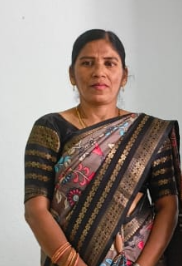
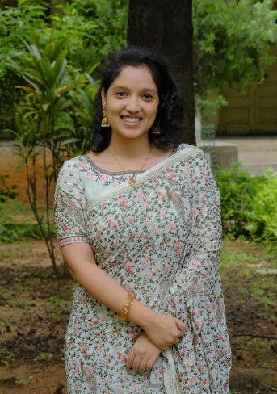

MAHATMA JYOTHIBA PHULE
TELANGANA BACKWARD CLASSES
WELFARE RESIDENTIAL
DEGREE COLLEGE FOR WOMEN
Medchal & Hyderabad
🏥 Department Code: NUR-01
Department of Nursing
M. Prasanna is a Degree Lecturer in the department of Staff Nurse.She have successfully completed a five-month certified training program at Cadabams Rehabilitation Centre, a reputed center specializing in mental health care and psychiatric rehabilitation. This training provided comprehensive exposure to the management and rehabilitation of individuals with mental illnesses. In addition, She gained practical experience in handling COVID-19 cases during the pandemic, where She actively contributed to patient care and emergency response. She also have six months of professional experience working in the Emergency Department at KIMS Hospital, where She assisted in managing critical and emergency cases. Furthermore, She completed one year of service in the Emergency Department at Medinova Hospital, gaining extensive exposure to emergency medical care and patient management.
M. Prasanna
Nurse
B. Swapna is a Degree Lecturer in the department of Staff Nurse.She have five years of experience working in a Primary Health Centre. During this time, She gained valuable exposure to patient interaction, healthcare coordination, and the functioning of public health systems. She have also been actively involved in serving her local society for the past ten years. Through this involvement, She participated in various community welfare and development activities. She engagement allowed to work closely with people from diverse backgrounds and contribute to social initiatives. They also enhanced her sense of responsibility toward community development.

B. Swapna
GNM
📂 Department Code: JA-01
Department of Junior Assistants
B. Swathi is a Junior Assistent.She was appointed to public service through the TGPSC Group‑4 Services, a highly competitive examination conducted by the Telangana Public Service Commission. Her selection through TGPSC demonstrates her commitment to contributing effectively to public administration and government service. Through this opportunity, She have gained valuable experience in understanding administrative procedures and public service responsibilities. She remain committed to maintaining transparency, accountability, and professionalism in all assigned duties. This achievement represents an important milestone in her career and reflects her aspiration to serve society through responsible governance. She continue to strive for excellence while contributing positively to the functioning and development of public institutions.
B. Swathi
M.A(Sociology)
M. Charitha is a Junior Assistent.She was appointed to public service through the TGPSC Group‑4 Services, a highly competitive examination conducted by the Telangana Public Service Commission. Her selection through TGPSC demonstrates her commitment to contributing effectively to public administration and government service. Through this opportunity, She have gained valuable experience in understanding administrative procedures and public service responsibilities. She remain committed to maintaining transparency, accountability, and professionalism in all assigned duties. This achievement represents an important milestone in her career and reflects her aspiration to serve society through responsible governance.She continue to strive for excellence while contributing positively to the functioning and development of public institutions.

M. Charitha
M.A(Political Science)
K. Rinny is a Junior Assistent.She was appointed to public service through the TGPSC Group‑4 Services, a highly competitive examination conducted by the Telangana Public Service Commission. Her selection through TGPSC demonstrates her commitment to contributing effectively to public administration and government service. Through this opportunity, She have gained valuable experience in understanding administrative procedures and public service responsibilities. She remain committed to maintaining transparency, accountability, and professionalism in all assigned duties. This achievement represents an important milestone in her career and reflects her aspiration to serve society through responsible governance. She continue to strive for excellence while contributing positively to the functioning and development of public institutions.